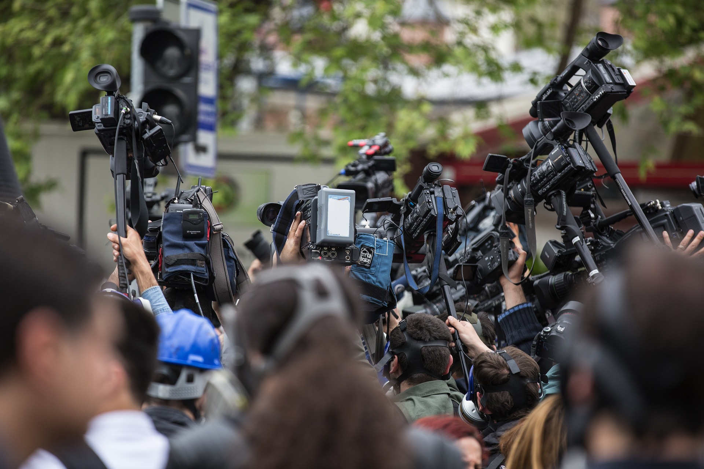
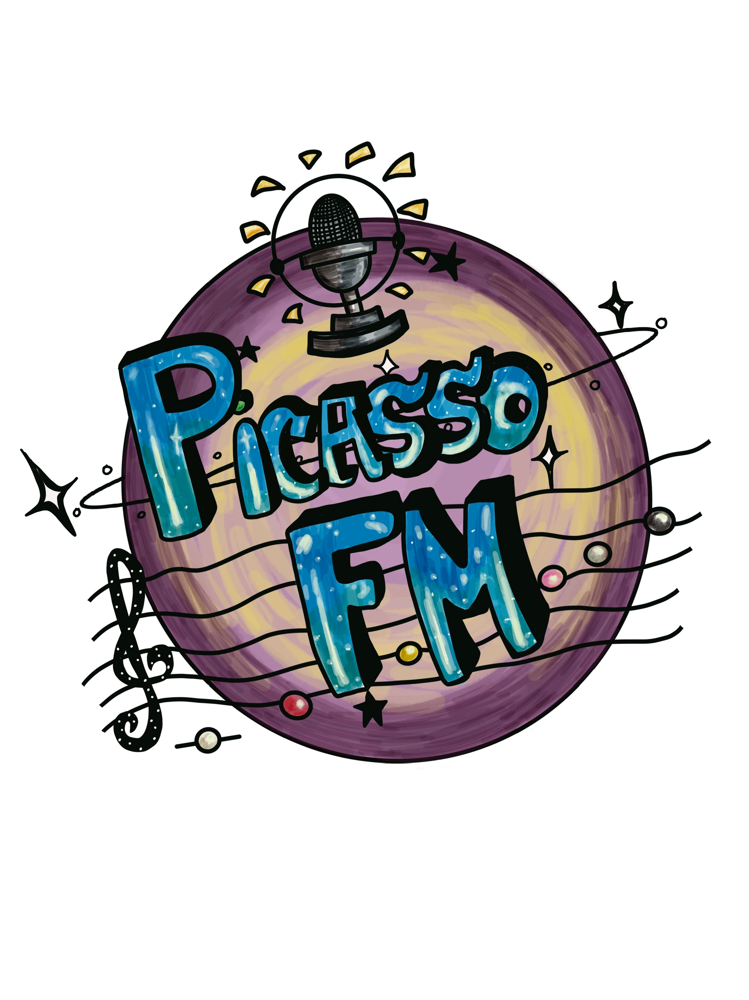
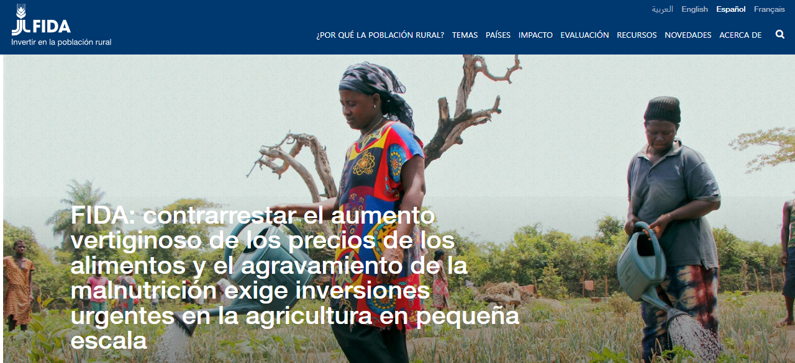
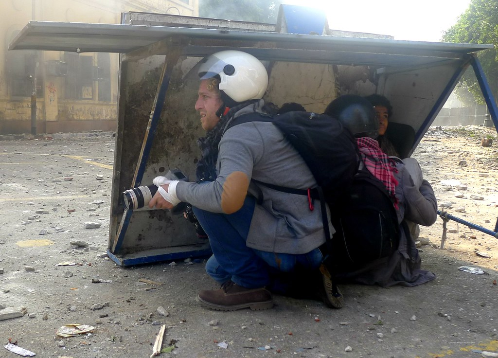

Nadie puede dudar hoy en día de la importancia de la prensa. Todo es noticia y la difusión de lo que sucede en el mundo se puede hacer de diferentes maneras. Periódicos, revistas, blogs, internet, YouTube... Todos y cada uno de ellos hacen que los acontecimientos se difundan de manera inmediata entre los lectores.

Muchas de las informaciones a las que accedemos, tanto por medios audiovisuales como escritos, se centran en lo que sucede en nuestro mundo, el mundo desarrollado, pero poco sabemos sobre los acontecimientos, los sentimientos y las necesidades de los países llamados del "tercer mundo".
A través de este REA, conocerás las características de los textos periodísticos y sus principales géneros informativos, a la vez que trabajaremos la expresión oral y escrita, nos informaremos de distintas realidades que se viven en puntos muy lejanos del planeta y nos convertiremos en periodistas para colaborar con la difusión y el compromiso con los Objetivos de Desarrollo Sostenible (ODS) marcados en la Agenda 2030 a través de nuestra radio escolar PICASSO FM. ¿Te atreves?
Para comenzar, vamos a escuchar un fragmento del programa de radio "Cinco continentes", de RNE y luego rellenaremos la siguiente plantilla, siguiendo esta dinámica en parejas y, finalmente, realizando una puesta en común con el grupo. El secretario de cada grupo subirá a Classroom las respuestas definitivas consensuadas por el equipo.

¿Cómo lo hemos visto? ¿Nos parece justa esta situación? En este proyecto de trabajo, por una parte queremos sumergirnos en el mundo de la información a través del análisis de diferentes noticias. Pero además, seremos periodistas y elaboraremos nuestros propios podcast con una mirada crítica que evidencie la poca relevancia que los países menos desarrollados y más pobres tienen en los medios de comunicación.
En este proyecto vamos a convertirnos en reporteros y reporteras de noticias periodísticas, pero en lugar de un periódico, vamos a cambiar de medio de comunicación. Nuestro objetivo es realizar, por grupos, un podcast para nuestra radio escolar.
Para ello, vamos a investigar y aprender sobre los géneros periodísticos que informan, conoceremos en profundidad las características de las noticias, los reportajes y las entrevistas para poder ser unos buenos redactores y, finalmente, veremos cuáles son sus peculiaridades en el medio radiofónico.
Nuestro podcast incluirá informaciones variadas y de géneros diversos que serán redactadas y grabadas por nosotros y que después subiremos a nuestro canal de Picasso FM en Ivoox.
No debemos olvidar que uno de nuestros objetivos principales es dar voz a los países más pobres y en vías de desarrollo por lo que siempre debemos tener en cuenta en nuestras tareas y actividades este punto de vista. Nuestros podcast van a ser el eco de los acontecimientos de estos países y de la vida de sus habitantes.

Alisdare Hickson. Journalist and boy... (CC BY-SA)
Trabajo en equipo y organización del aula
Como forma de trabajo habitual nos organizaremos en equipos de varias personas para distribuir las tareas de manera colaborativa. Algunas tareas las haremos, previamente, en parejas para después completarlas con las otras parejas del equipo. En ocasiones, expondremos nuestro trabajo de grupo ante el resto de la clase.
Evaluación
Antes de comenzar el proyecto, revisaremos en clase cada instrumento de evaluación, ya que nos darán pautas de lo que se espera que consigamos. Nuestro trabajo y aprendizaje será evaluado a lo largo del proyecto con diferentes rúbricas y plantillas de evaluación. Tomaremos parte activa en esta evaluación, utilizando las siguientes herramientas para autoevaluar nuestro trabajo y para coevaluar el de nuestros compañeros y compañeras.
- Escala global para valorar el proceso de aprendizaje
- Rúbrica para evaluar el podcast
- Diario personal de aprendizaje: a lo largo del proyecto, al final de cada secuencia, iremos rellenando un "Diario personal de aprendizaje" en el que recogeremos lo que vamos aprendiendo, contando nuestra experiencia con cada tarea, lo que nos ha resultado más interesante o más difícil..., y la completaremos con imágenes de lo que vamos aprendiendo en el proyecto, de lo que nos haya gustado especialmente... Cada persona tendrá creada una tarea en Classroom con este título. Creará un documento en ella para redactar en él cada entrada. Cuando terminemos el proyecto, revisará que esté completo y bien expresado (sin faltas de ortografía ni puntuación) antes de entregarlo.
- Portafolio del equipo: esta herramienta sirve para poder revisar el progreso de nuestro trabajo en grupo. Para recoger algunos de los materiales que elaboremos, cada grupo creará una carpeta en Drive, compartida con todos los miembros del equipo y la profesora. Si tenemos dudas sobre el uso de Google drive podemos consultar el recurso "Ayuda de Drive". Si no estamos habituados a utilizar esta aplicación, podemos también crear nuestro portafolio en una carpeta o archivador, donde iremos guardando de forma ordenada todas las producciones en papel. En algunos casos, el secretario del equipo subirá el trabajo de grupo a Classroom en la tarea creada para ello.